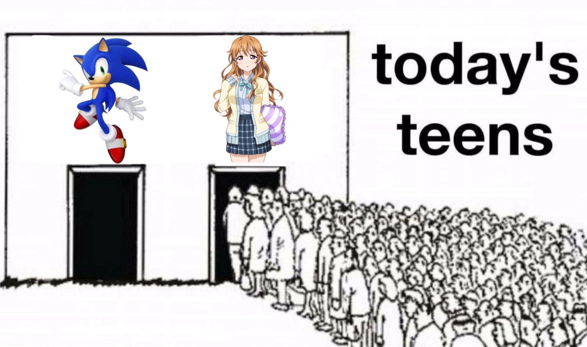
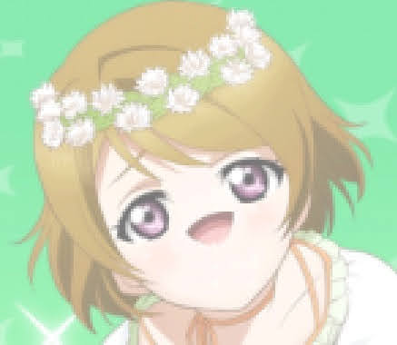

Learning about Love Live! characters through memes
I'm going to be sharing memes of some of the characters in Love Live!
Background Information:
Love Live! is a multimedia school idol music project.
There have been rhythm games, anime series (4), movies (2), actual music
(several albums' worth), and even live concerts.
The franchise consists of girls who come together to form school idol
groups (there are 4 different ones).
More info here.
Now... On to the memes...
Feel free to come up with your own assumptions about their personalities
based on these images alone :)
Umi
Kotori
Setsuna
Kasumi
Kanata

Hanamaru

Yoshiko, also known as Yohane
Rina
Nico
Ruby
Riko
Honoka
Hanayo

Hanamaru and Ruby

Yoshiko and Riko
Riko and Chika
Mari and You
Chika, Mari, Ruby, Dia, Yoshiko, Riko, You, Kanan, and Hanamaru from
Aqours with Josuke from JoJo's Bizarre Adventure

Not every character has their own meme (or memes) because there are A
LOT. And I mean A LOT!
Thank you for your time.